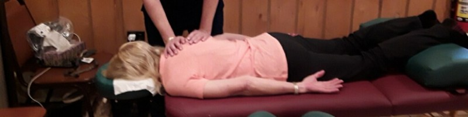

A Natural Approach to Health
How I Got Started
Back in 1984, I was struck by an automobile while crossing the street and it changed my life. After my six-week hospital stay, doctors said my body would not be able to run, walk without a limp, or take part in regular activities as simple as gardening. Pain would be a constant in my life.
In 2001, I began my schooling in Massage and Alternative Wellness. I completed my study of Shiatsu full body reflex work and Shin Tai Myofascial unwinding. These treatments helped me personally restore my own body so that I participate in daily life with more ease than what doctors said would be possible. No limp in my walk. I can run and I love gardening.
Allow me to help you transform your pain into a positive life.